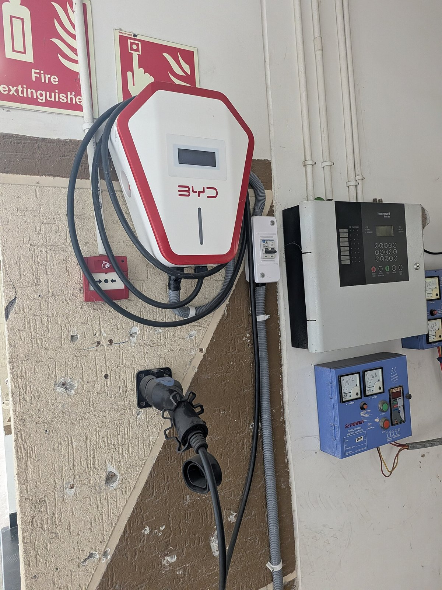

[한중수교 34년⑤] 한국에서 새로 등록한 전기차 3대 중 1대가 중국산이다
중국산 전기차 국내 점유율 2022년 4.7%에서 2025년 33.9%로, 한국산은 75%→57.2%
비야디는 한국 진출 11개월 만에 1만대를 넘겨 수입차 4위에 올랐다
2024년 연재가 본 바이두 자율주행은 로보택시 상용화와 집단 셧다운을 함께 겪었다
AI경제저널=김갑봉 기자 | 2024년 이 연재는 중국 베이징에서 바이두의 자율주행차를 봤다. 정부 지원 속에 상용화가 빨라지고 있다는 내용이었다. 2년이 지나 중국 자동차는 한국의 도로 위에 있다. 2025년 한국에서 새로 등록한 전기차 세 대 가운데 한 대가 중국에서 만든 차다.

※ 이 연재는 2024년 인천투데이에 실린 「한중수교 32년」 연재를 잇는다. 논지는 이어받되 수치와 사실은 2026년 10월 기준으로 다시 확인해 썼다.
4.7%에서 33.9%로
한국에 새로 등록되는 전기차 가운데 중국에서 생산된 차의 비중은 2022년 4.7%였다. 2025년에는 33.9%다. 세 해 사이 일곱 배가 됐다.
같은 기간 한국에서 생산한 전기차의 비중은 75%에서 57.2%로 내렸다. 열 대 가운데 일곱 대 넘게 국산이던 자리가 여섯 대 아래로 줄었다.
중국산이라고 해서 모두 중국 브랜드는 아니다. 테슬라가 중국 공장에서 만들어 한국에 들여오는 물량이 큰 몫이다. 2022년부터 2025년까지 테슬라 중국산 모델의 한국 판매가 311% 늘었고 2026년 1분기에는 수입차 브랜드 판매 1위를 차지했다.
비야디, 11개월에 1만대
중국 브랜드도 들어왔다. 비야디(BYD)는 한국 진출 약 11개월 만에 누적 판매 1만대를 넘겼다. 수입 브랜드 가운데 가장 빠른 속도이고 수입차 순위 4위다. 아토3와 씰, 씨라이언7이 팔렸다.
비야디가 한국 시장을 노린 데는 본국 사정도 있다. 중국 안에서 전기차 경쟁이 거세지면서 비야디의 순이익이 반 토막 났다는 보도가 2026년에 나왔다. 안에서 좁아진 만큼 밖으로 나온 것이다.
값과 제도
중국산 차에 붙는 관세는 8%다. 한중 자유무역협정으로 낮아진 세율이다.
제도 쪽에서는 2026년 7월부터 보조금 기준이 바뀌었다. 연구개발과 일자리 창출, 지역 부품 조달 등 일곱 가지 기준으로 평가해 80점 이상인 업체에만 보조금을 준다. 값싼 차가 보조금까지 받아 들어오는 구조를 손본 것이다.
그래도 가격 차이는 남는다. 리튬인산철(LFP) 배터리를 쓰는 보급형 모델의 가격 경쟁력이 핵심이다. 한국 배터리 3사가 보급형 제품 양산에 들어간 것도 그 때문이다.
바이두 자율주행 2년
2024년 연재가 베이징에서 본 바이두 아폴로는 2026년에 두 가지를 보여 줬다.
하나는 상용화다. 로보택시가 실제로 돌아가고 시장 전망은 233조원 규모로 제시된다. 미국의 웨이모와 테슬라, 중국의 바이두가 수익성을 놓고 겨루는 국면이다.
다른 하나는 사고다. 2026년 중국 우한에서 바이두 아폴로고 차량이 한꺼번에 멈춰 서는 집단 셧다운이 일어났다. 도시 교통이 마비됐고 자율주행 신뢰도가 떨어졌다.
기술은 도로에 나왔지만 도로를 감당하는 단계까지는 오지 않았다는 뜻이다. 중국이 빠른 것은 기술만이 아니라 실증을 허용하는 속도이기도 하다. 그 속도에는 이런 비용이 따라붙는다.
2024년과 2026년 사이에 바뀐 것
2024년 연재는 중국의 자율주행을 '정부 지원 속 상용화 가속'으로 봤다. 바깥에서 들여다본 구도였다.
2026년에는 안쪽 이야기가 됐다. 중국 자동차가 한국 도로에 있고, 보조금 기준을 어떻게 짤지가 한국의 정책 문제가 됐다. 구경하던 자리에서 겨루는 자리로 옮겼다.
②편에서 본 공급망과 겹친다. 한국이 중국에서 사 오는 것은 희토류와 소재만이 아니다. 완성차도 들어온다. 파는 쪽은 반도체 한 품목에 몰렸고 사는 쪽은 품목이 늘어난다.
남은 것
현대차와 기아의 국내 점유율에 금이 가고 있다는 분석이 나온다. 대응으로 거론되는 것은 보급형 라인업을 넓히는 일, 리튬인산철 배터리에 맞설 보급형 배터리를 양산하는 일, 서비스망과 소프트웨어 중심 차량(SDV) 기술을 다지는 일이다.
값으로만 막으면 막히지 않는다. 중국은 값으로 들어왔지만 그 값은 규모가 만든 것이다. 규모를 따라갈 수 없다면 다른 자리를 찾아야 한다.
수교 34년, 중국 산업은 한국이 팔던 자리로 들어왔다. 다음 편에서는 그 반대 방향, 중국에 나가 있는 한국 기업을 본다.
참고문헌
·"'3대 중 1대는 중국산' 韓 안방까지 파고든 中 전기차… 비야디 필두로 파죽지세", 글로벌이코노믹, 2026년 4월 28일. https://www.g-enews.com/article/Global-Biz/2026/04/2026042717502170760c8c1c064d_1
·"BYD, 韓 진출 1년 만에 1만대 돌파…아토3·씰·씨라이언7 통했다", 이투데이, 2026년. https://www.etoday.co.kr/news/view/2575132
·"중국 전기차 경쟁 격화로 비야디 순이익 반토막‥한국 시장에 눈독", MBC, 2026년. https://imnews.imbc.com/news/2026/world/article/6818866_36925.html
·"[비바100] AI가 운전대 잡은 '로보택시'⋯233조 시장 열린다", 브릿지경제, 2026년 8월 23일. https://www.viva100.com/article/20260823500015
·"중국 우한 마비시킨 바이두 아폴로 고 집단 셧다운… 자율주행 신뢰도 급락", 다나와 자동차, 2026년.
·"美·中 로보택시 '수익성' 사활…웨이모·바이두·테슬라", 이투데이, 2026년. https://www.etoday.co.kr/news/view/2564801
·"[WRC 2026] 바이두 자율주행 전진기지 '아폴로 파크'", 로봇신문, 2026년. https://www.irobotnews.com/news/articleView.html?idxno=48002
※ 이 기사는 AI 프로그램 클로드를 활용해 작성했습니다.
관련기사
- [한중수교 34년⑥] 중국 진출 한국 기업 32%가 "5년 안에 접거나 옮기겠다"
- [한중수교 34년④] 한중 카페리 여객 41만명, 2019년의 40%에 머물러 있다
- [한중수교 34년⑦] 전국 외투기업의 53%가 인천경제자유구역에 있다
- [한중수교 34년③] 상품은 2700억달러인데 서비스는 388억달러뿐이다
저작권자 © AI경제저널 무단전재 및 재배포, AI학습 및 활용 금지